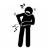

تروما لگن
برای بررسی لگن از نمای AP, Outlet , inlet استفاده میکنیم و کمتر نمای لترال بکار میاید. همچنین توصیه میشه از سی تی اسکن استفاده شود.
در تفسیر گرافی لگن توجه به مهره ها، حلقه لگنی، سوراخ های ابتواتور ،استخوان ایلیاک، خط شنتون، راموس فوقانی وتحتانی، سمفیز پوبیس ضروریست، شکستگی در یک ناحیه میتواند با شکستگی در سایر نقاط همراه باشد.